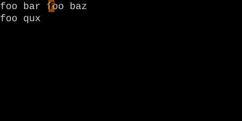
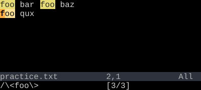

Word Search
* / # — search for the word under the cursor without typing it.
Put the cursor on a word, press * to search forward for the next occurrence, # for the previous. g* and g# do the same but without word boundaries.
Cursor on a word, press *, jump to the next occurrence. Press #, jump to the previous. No typing the pattern, no closing Enter.
| Key | Note |
|---|---|
| * |
| Key | Note |
|---|---|
| # |
| Key | Note |
|---|---|
| g | |
| * |
| Key | Note |
|---|---|
| g | |
| # |
Reference
| Key | Pattern built | Direction |
|---|---|---|
| * | \<word\> |
Forward |
| # | \<word\> |
Backward |
| g* | word |
Forward |
| g# | word |
Backward |
Worked example — * on a word
Search for the current word, no typing required.


* turns the cursor word into a search pattern with word boundaries (\<...\>) so 'foobar' won't match. # is the same backward.
See also: Pattern Search, The Replace Loop — *, cw, then . . ., Change-Next-Match Loop — cgn